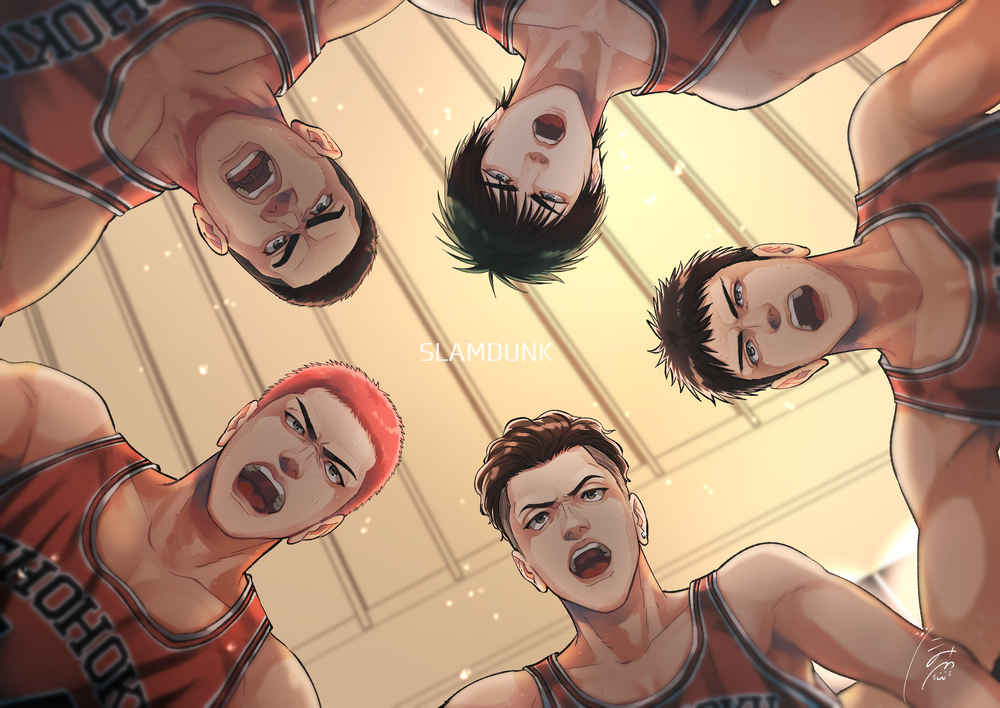
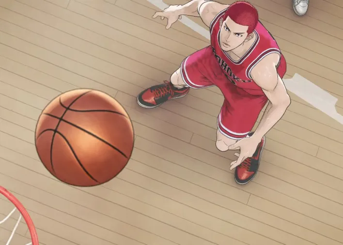
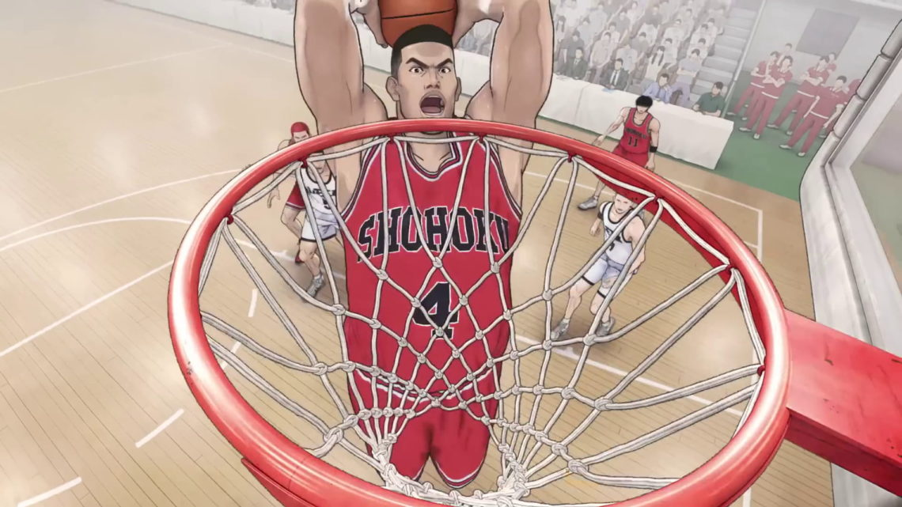
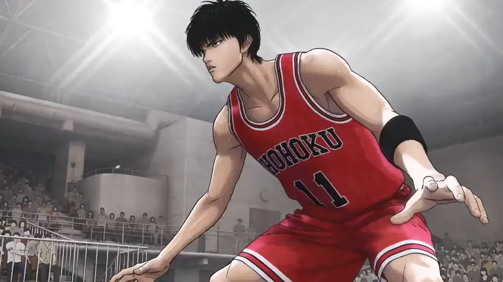
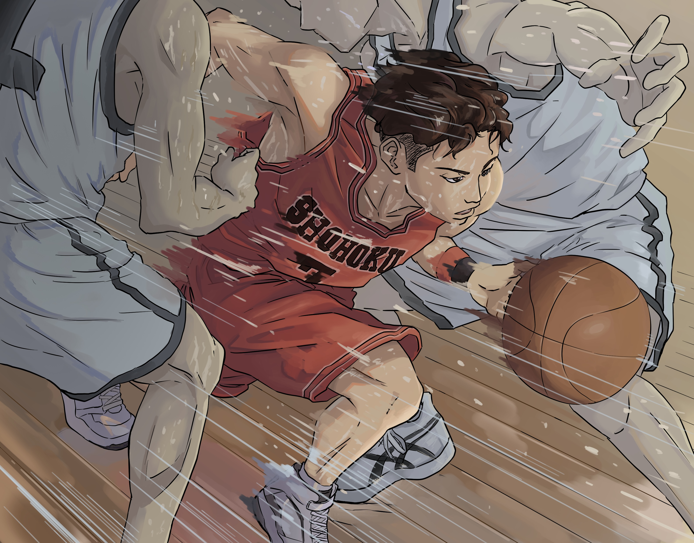
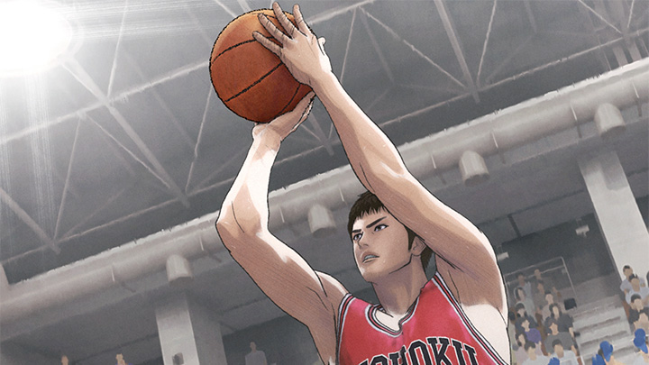

Slam Dunk traz a história de Hanamichi Sakuragi, um estudante do colegial delinquente apaixonado pela delicada Haruko Akagi, que o introduz ao mundo do basquete. A partir daí, o desajeitado personagem começa a se envolver no esporte, em fazer parte de uma equipe e a se desenvolver como atleta e pessoa. O mangá foi criado por Takehiko Inoue e lançado em 1990, no Japão.